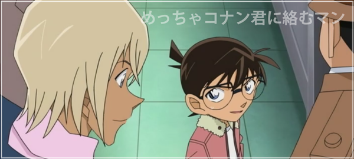
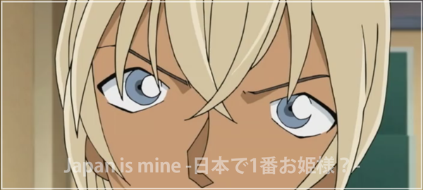
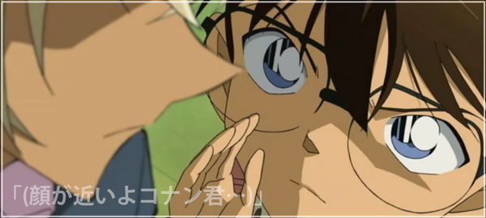
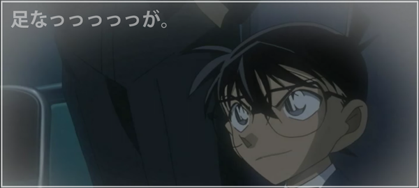

緋色の追及
彼らの話を聞いてみると…
菅本：車は所持しているが今日は調子が悪く電車通勤。
以前夏子に告白するもフラれ、さらに彼女のストーカーをしていたことが発覚。
植野：免許はあるが主人の借金返済のために車は売っている。
息子にはキャバクラで貢ぎまくった主人の二の舞になってほしくないと嘆く。
忠告をした際、夏子は採点中だったと告げる。
神立：車は今朝盗まれたと言う。
夏子の携帯に残っていた未送信メールの宛先が神立ではないかと聞かれるが知らないようで、
「俺宛だったとしても、足し算引き算で頭ん中数字が飛びかって勘違いしたんだろ」と答える。
証拠であるテストの答案用紙の写真を皆で見る。ジョディはアメリカと日本の採点の違いについて以前夏子から聞いていた通りだと話す。
(満点の場合、日本では花丸、アメリカではExcellentの文字)
「この写真から読み取れる情報はそれだけかと聞いているんですよ。」と相変わらず挑発を続ける安室。
「やはり読み取れたのは僕たちだけだったようだよ。江戸川コナンくん？」

コナンは「え？何の事？」と誤魔化すが、「君、写真を見た後ガン見してたじゃないか、犯人の事を」と安室には見抜かれていた。
そして夏子が自分に依頼したのはFBIが頼りないからでは？と更に煽る安室に、
「観光で来てるから頼みづらかったんですよ」とフォローするキャメル。すると…
「ビザがないならそろそろ滞在日数が限界に来てるんじゃないですか？観光を満喫したのなら、とっとと出て行ってくれませんかねぇ…」
「僕の日本から…」

その言葉を聞いたコナンは「ねぇ、ちょっとゼロ…いや、安室の兄ちゃん」と安室を部屋の隅に連れて行く。
「安室の兄ちゃんってさ…」
「…敵…だよね？…悪い奴らの」
と安室に尋ねるコナン。
「ゼロ…。僕の子供の頃のアダ名は本当にそうだったんだ……君は少々、僕の事を誤解してるようだ…」
驚くコナンを置いて事件の真相について話を進める。
事件の真相を瞬時に見抜くあの洞察力、ベルツリー急行で灰原を殺そうとしなかったあの行動、『ゼロ』という単語に反応したあの態度…
そして確信を持ったのが、FBI捜査官に言い放った『出て行ってくれませんかねぇ…僕の日本から』…あの信念
ゼロというのは、存在しない組織であれと名付けられたコードネーム。日本の安全と秩序を維持するために存在する【公安警察】の俗称。
安室が組織に潜入している公安であると考えていたが予想外の答えに戸惑う。もし彼が公安でないのなら…
「練りに練った、あの計画が…」

そもそもFBIとバーボンが偶然事件現場で遭遇するだろうかと疑問を持つ。
そこでジョディに夏子のメールで2人は飲む約束をしていたため昨夜電話した事、
夏子はメールした覚えはないがうっかりしているから忘れていたと思った事、
最近ジョディの携帯の充電の減りが早い事を知り、さらに焦るコナン。
一方、事件は解決に向かう。アメリカでは正解にペケ＝チェックマーク、不正解に丸を付けると話す安室。
つまり1番上の、すべてに丸が付き100点満点となっている解答用紙は日本人の犯人がつけたもの。しかも花丸は反時計回りに描かれている。
それらの情報から、犯人は右手のハンカチで汗を拭った菅本でも、右手でハンカチを受け取った植野でもなく、
左手でライターをつけようとした神立だと判明した。
夏子と会っていないという彼が、夏子が採点していた科目を知らないのに「足し算引き算で～…」と言っていたことも決定打。
しかし、夏子の容態が悪化し危険な状態だと報告を受け、急いで病院に向かう…が、そこには意識を取り戻し、元気な姿の夏子。
その頃キャメルは安室から楠田陸道について問われ、情報を渡すまいとキャメルは口を紡ぐ。
そこにジョディがキャメルの腕を引っぱり安室から守る。 楠田ことを話していないかと確認され、
「もちろんですよ、奴が車の中で拳銃自殺したなんて事、口が裂けても漏らしたりしません」
ジョディはニヤッと笑い「そう、ありがと」と言って姿を消したのだった。